Capítulo 6 Gráficos y Distribución del Ingreso
Reiniciar Sesión
6.1 Gráficos Básicos en R
Rbase tiene algunos comandos genéricos para realizar gráficos, que se adaptan al tipo de información que se le pide graficar, por ejemplo:
- plot()
- hist()
## iris es un set de datos clásico, que ya viene incorporado en R
iris[1:10,]## Sepal.Length Sepal.Width Petal.Length Petal.Width Species
## 1 5.1 3.5 1.4 0.2 setosa
## 2 4.9 3.0 1.4 0.2 setosa
## 3 4.7 3.2 1.3 0.2 setosa
## 4 4.6 3.1 1.5 0.2 setosa
## 5 5.0 3.6 1.4 0.2 setosa
## 6 5.4 3.9 1.7 0.4 setosa
## 7 4.6 3.4 1.4 0.3 setosa
## 8 5.0 3.4 1.5 0.2 setosa
## 9 4.4 2.9 1.4 0.2 setosa
## 10 4.9 3.1 1.5 0.1 setosaplot(iris)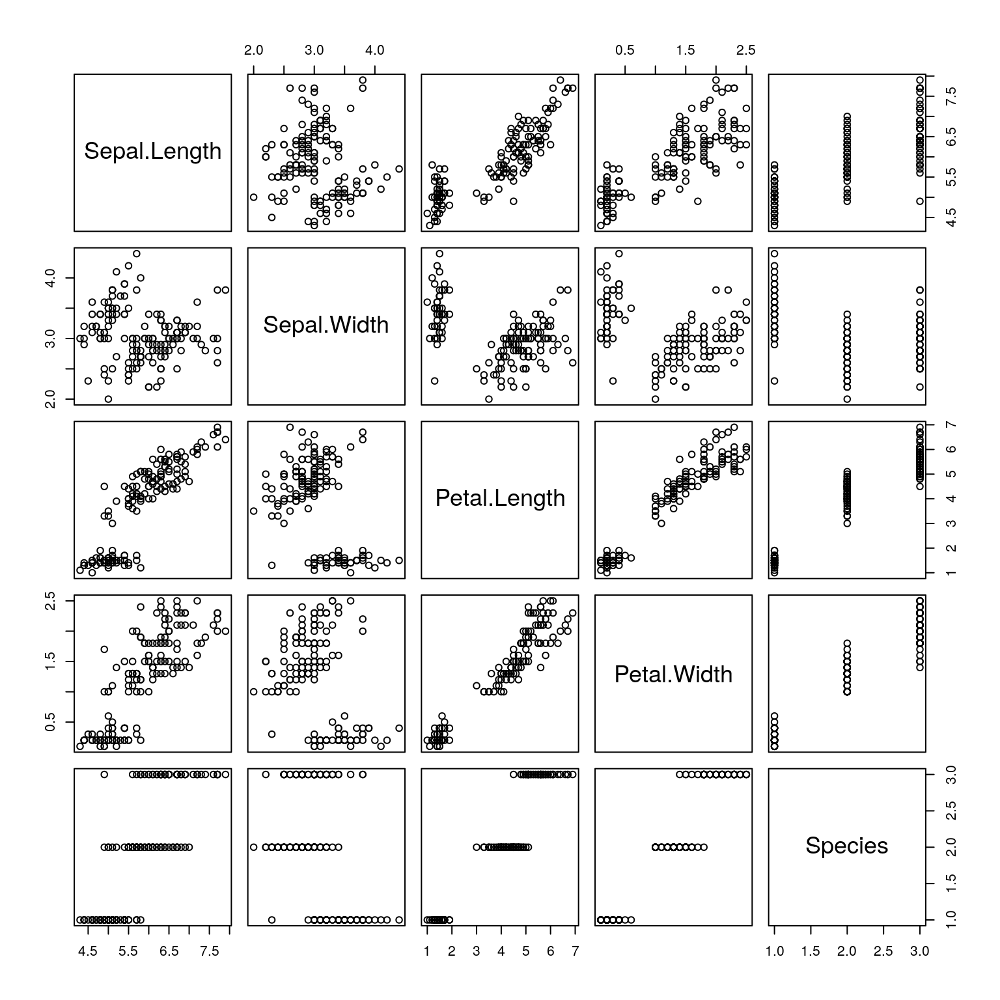
##Al especificar una variable, puedo ver el valor que toma cada uno de sus registros (Index)
plot(iris$Sepal.Length,type = "p") ## Un punto por cada valor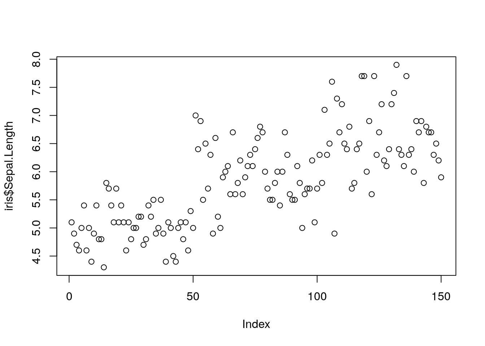
plot(iris$Sepal.Length,type = "l") ## Una linea que una cada valor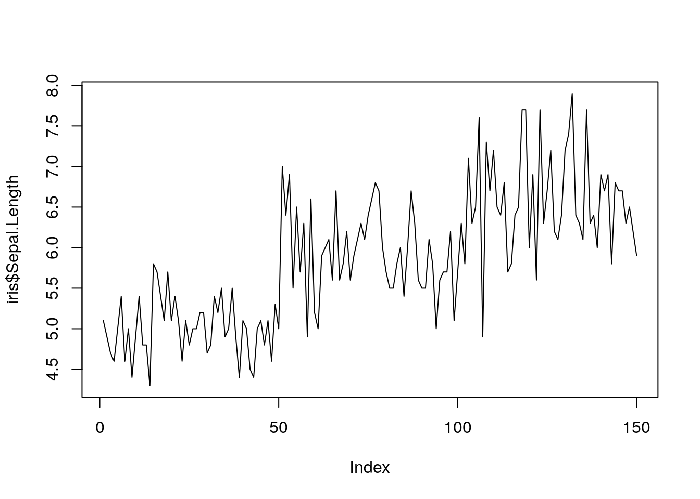
plot(iris$Sepal.Length,type = "b") ##Ambas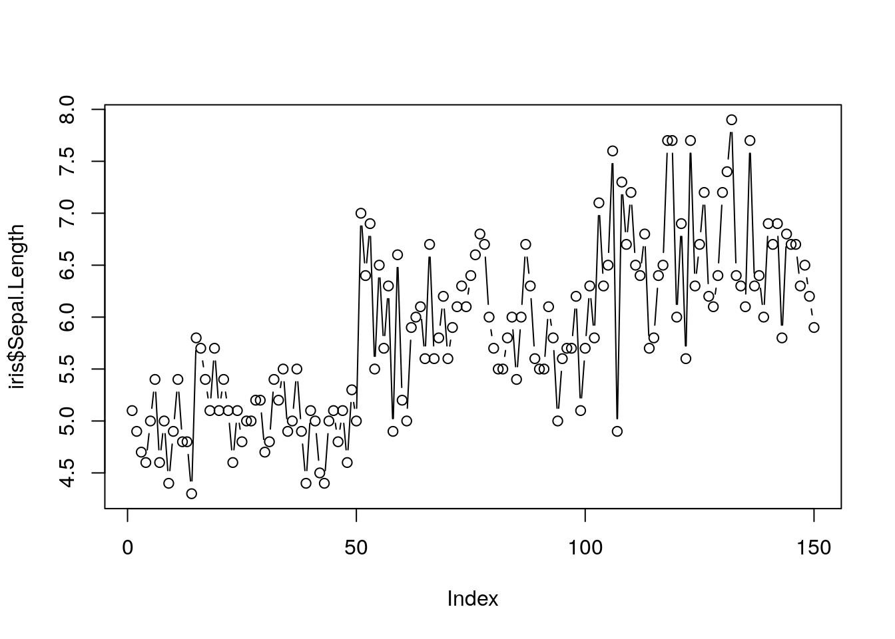
hist(iris$Sepal.Length, col = "lightsalmon1", main = "Histograma")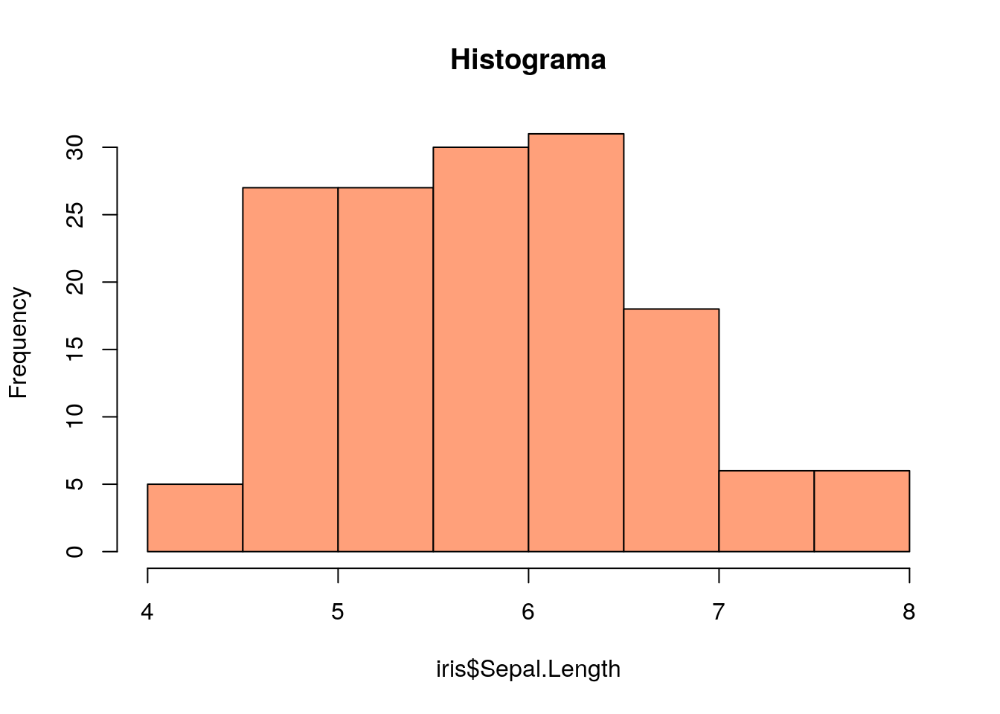
6.1.1 png
La función png() nos permite grabar una imagen en el disco. Lleva como argumento principal la ruta completa a donde se desea guardar la misma, incluyendo el nombre que queremos dar al archivo. A su vez pueden especificarse otros argumetnos como el ancho y largo de la imagen, entre otros.
ruta_archivo <- "Resultados/grafico1.PNG"
ruta_archivo## [1] "Resultados/grafico1.PNG"png(ruta_archivo)
plot(iris$Sepal.Length,type = "b")
dev.off()## png
## 2La función png() abre el dispositivo de imagen en el directorio especificado. Luego creamos el gráfico que deseamos (o llamamos a uno previamente construido), el cual se desplegará en la ventana inferior derecha de la pantalla de Rstudio. Finalmente con dev.off() se cierra el dispositivo y se graban los gráficos.
Los gráficos del R base son útiles para escribir de forma rápida y obtener alguna información mientras trabajamos. Muchos paquetes estadísticos permiten mostrar los resultados de forma gráfica con el comando plot (por ejemplo, las regresiones lineales lm()).
Sin embargo, existen librerías mucho mejores para crear gráficos de nivel de publicación. La más importante es ggplot2, que a su vez tiene extensiones mediante otras librerías.
6.2 Ggplot2
ggplot tiene su sintaxis propia. La idea central es pensar los gráficos como una sucesión de capas, que se construyen una a la vez.
El operador
+nos permite incorporar nuevas capas al gráfico.El comando
ggplot()nos permite definir la fuente de datos y las variables que determinaran los ejes del grafico (x,y), así como el color y la forma de las líneas o puntos,etc.Las sucesivas capas nos permiten definir:
- Uno o más tipos de gráficos (de columnas,
geom_col(), de línea,geom_line(), de puntos,geom_point(), boxplot,geom_boxplot()) - Títulos
labs() - Estilo del gráfico
theme() - Escalas de los ejes
scale_y_continuous,scale_x_discrete - División en subconjuntos
facet_wrap(),facet_grid()
- Uno o más tipos de gráficos (de columnas,
ggplot tiene muchos comandos, y no tiene sentido saberlos de memoria, es siempre útil reutilizar gráficos viejos y tener a mano el machete.
6.2.1 Gráfico de Puntos
A continuación se desplega un gráfico de varias capas de construcción, con su correspondiente porción de código. En el mismo se buscará visualizar, a partir de la base de datos iris la relación entre el ancho y el largo de los petalos, mediante un gráfico de puntos.
library(ggplot2) ## cargamos la librería
ggplot(data = iris, aes(x = Petal.Length, Petal.Width, color = Species))+
geom_point(alpha=0.75)+
labs(title = "Medidas de los pétalos por especie")+
theme(legend.position = 'none')+
facet_wrap(~Species)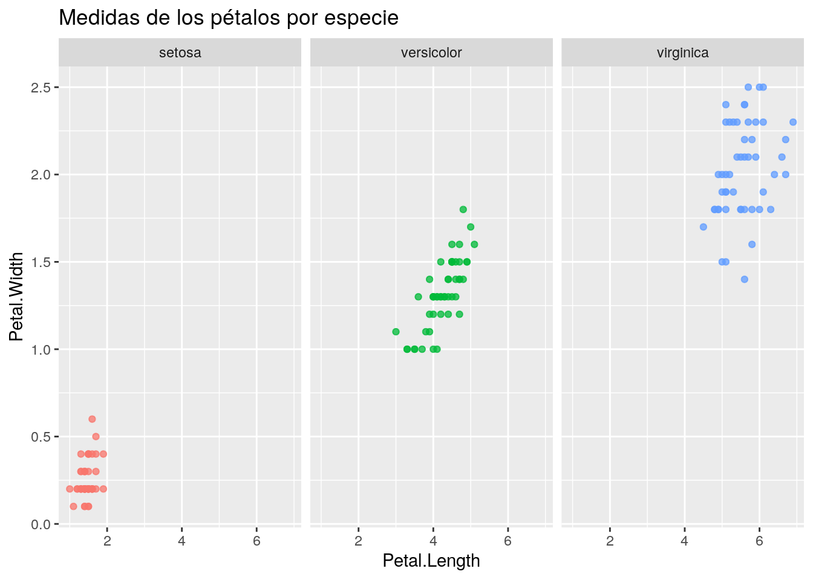 ### Capas del Gráfico Veamos ahora, el “paso a paso” del armado del mismo.
En primera instancia solo defino los ejes. Y en este caso un color particular para cada Especie.
g <- ggplot(data = iris, aes(x = Petal.Length, Petal.Width, color = Species))
g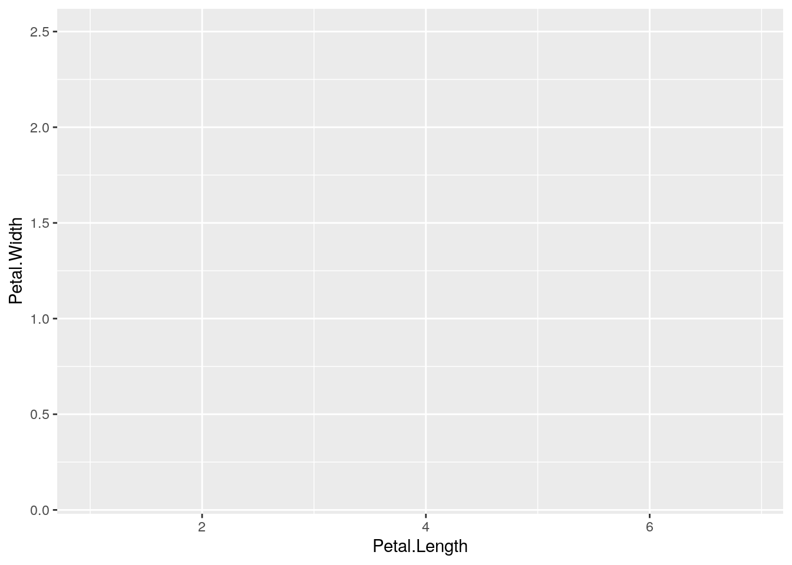 Luego, defino el tipo de gráfico. El alpha me permite definir la intensidad de los puntos
g <- g + geom_point(alpha=0.25)
g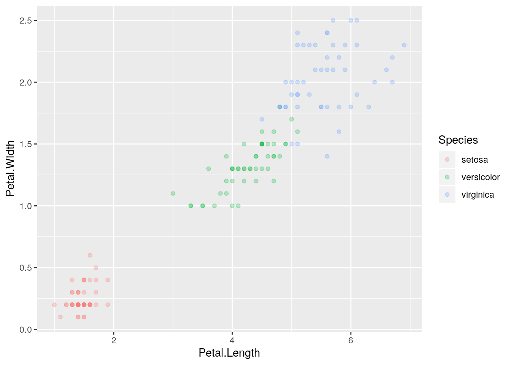 Las siguientes tres capas me permiten respectivamente:
- Definir el título del gráfico
- Quitar la leyenda
- Abrir el gráfico en tres fragmentos, uno para cada especie
g <- g +
labs(title = "Medidas de los pétalos por especie")+
theme(legend.position = 'none')+
facet_wrap(~Species)
g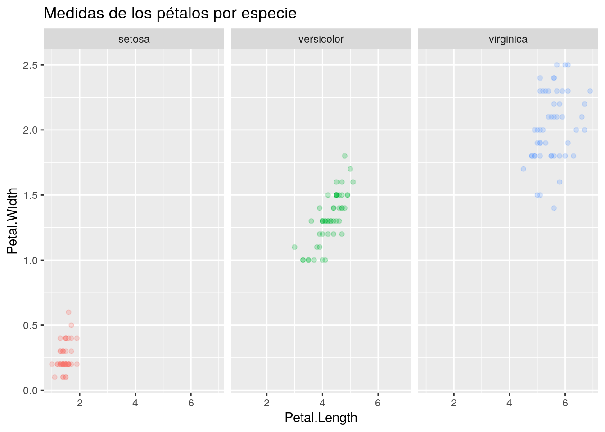
6.2.2 Extensiones de GGplot.
La librería GGplot tiene a su vez muchas otras librerías que extienden sus potencialidades. Entre nuestras favoritas están:
- gganimate: Para hacer gráficos animados.
- ggridge: Para hacer gráficos de densidad faceteados
- ggally: Para hacer varios gráficos juntos.
library(GGally)
ggpairs(iris, mapping = aes(color = Species))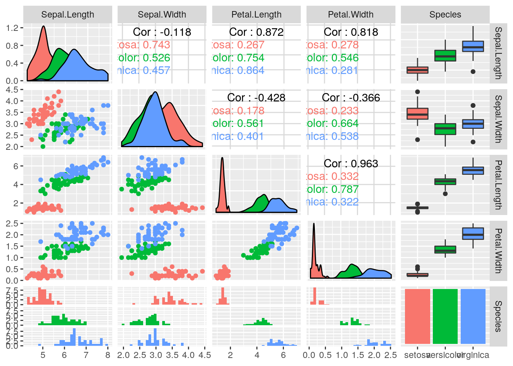
library(ggridges)##
## Attaching package: 'ggridges'## The following object is masked from 'package:ggplot2':
##
## scale_discrete_manualggplot(iris, aes(x = Sepal.Length, y = Species, fill=Species)) +
geom_density_ridges()## Picking joint bandwidth of 0.181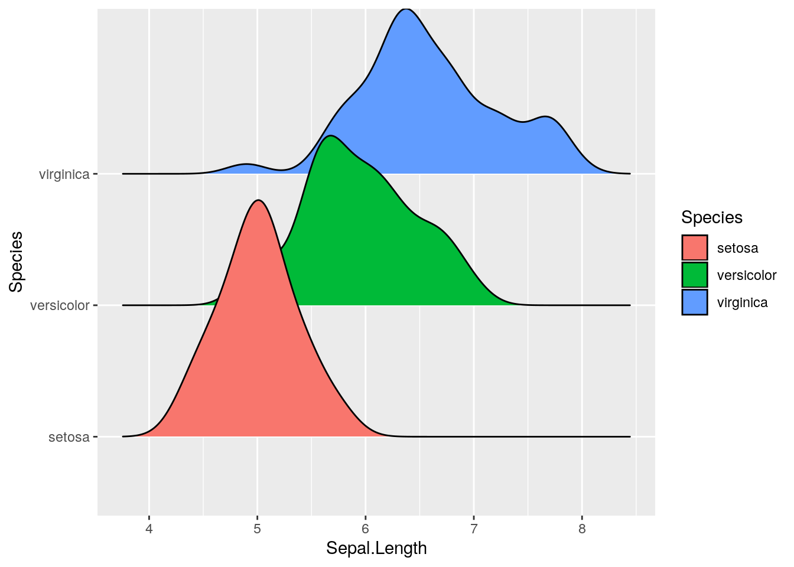
También hay extensiones que te ayudan a escribir el código, como esquisse
iris <- iris
##Correr en la consola
esquisse::esquisser()6.3 Graficos Ingresos - EPH
A continuación utilzaremos los conceptos abordados, para realizar gráficos a partir de las variables de ingresos.
Una de las ventajas del R respecto a otros softwares estadísticos, es la facilidad con la que podemos trabajar en simultaneo con multiples bases de datos. Aprovechando esta potencialidad, levantaremos a continuación 4 bases individuales de la EPH para realizar gráficos de series temporales.
##Cargamos las librerías a utilizar
library(tidyverse) ## tiene ggplot, dplyr, tidyr, y otros
library(ggthemes) ## estilos de gráficos
library(ggrepel) ## etiquetas de texto más prolijas que las de ggplotPara mayor practicidad, al momento de levantar las bases de datos, seleccionamos las variables necesarias (A excepción de la base del t1_2017 con la que trabajaremos numerosas variables)
Individual_t117 <- read.table("Fuentes/usu_individual_t117.txt",
sep=";", dec=",", header = TRUE, fill = TRUE)
Individual_t216 <- read.table("Fuentes/usu_individual_t216.txt",
sep=";", dec=",", header = TRUE, fill = TRUE) %>%
select(ANO4,TRIMESTRE,P21,PONDIIO,IPCF, PONDIH)
Individual_t316 <- read.table("Fuentes/usu_individual_t316.txt",
sep=";", dec=",", header = TRUE, fill = TRUE)%>%
select(ANO4,TRIMESTRE,P21,PONDIIO, IPCF, PONDIH)
Individual_t416 <- read.table("Fuentes/usu_individual_t416.txt",
sep=";", dec=",", header = TRUE, fill = TRUE)%>%
select(ANO4,TRIMESTRE,P21,PONDIIO, IPCF, PONDIH)6.3.1 Ingreso de la ocupación principal
Nuestro primer ejercicio consistirá en analizar la evolución del ingreso por la ocupación principal. Observando el diseño de registro podremos ver que dicha variable está codificada como
P21.Para minimizar la volatilidad que la no respuesta de ingresos podría generar en los resultados de unos y otros trimestres, la EPH asigna a los no respondentes el comportamiento de los respondentes por estrato de la muestra. A partir de esto las variables de ingresos presentan distintos factores de expansión.
En el caso del ingreso de la ocupación principal debemos trabajar con el expansor
PONDIIO.
##Unimos las bases y creamos una variable que concatena el año y el trimestre
Union_Bases <- bind_rows(Individual_t216,
Individual_t316,
Individual_t416,
Individual_t117) %>%
mutate(periodo = paste(ANO4, TRIMESTRE, sep = "_")) - Calculamos el ingreso per capita promedio, utilizando el ponderador correspondiente.
- Importante: Debemos exigir ingresos positivos, ya que tenemos numerosos casos con ingreso 0 y otros codificados con -9 (cuando no corresponde la pregunta por la ocupación principal)
IOppal <-Union_Bases %>%
filter(P21>0) %>%
group_by(periodo) %>%
summarise(IOppal_prom = weighted.mean(P21, PONDIIO))
IOppal## # A tibble: 4 x 2
## periodo IOppal_prom
## <chr> <dbl>
## 1 2016_2 10071.
## 2 2016_3 10757.
## 3 2016_4 11533.
## 4 2017_1 12305.Ahora podemos utilizar este nuevo dataframe para graficar
ggplot(data = IOppal, aes(x = periodo, y = IOppal_prom)) +
geom_point()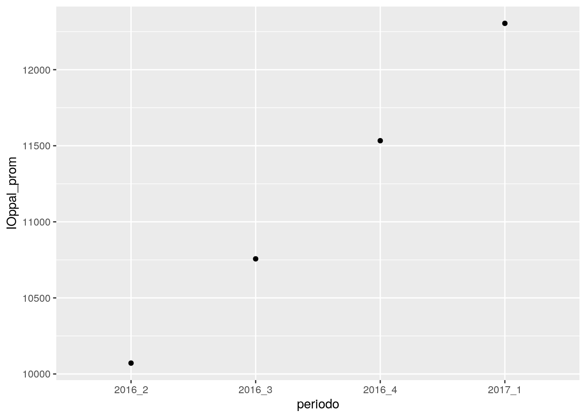
Agregando algunos parámetros más …
- Definimos las variables del gráfico
g <- IOppal %>% ##Podemos usar los "pipes" para llamar al Dataframe que continen la info
ggplot(aes(x = periodo,
y = IOppal_prom,
##Agrupar nos permitirá generar las lineas del gráfico
group = 'IOppal_prom',
##Agregamos una etiqueta a los datos (Redondeando la variable a 2 posiciones decimales)
label= round(IOppal_prom,2)))- Agregamos titulo y modificamos ejes
g <- g +
labs(x = "Trimestre",
y = "IPCF promedio",
title = "Ingreso promedio por la ocupación principal",
subtitle = "Serie 2trim_2016 - 1trim_2017",
caption = "Fuente: EPH")- Agregamos puntos y lineas
g <- g +
geom_point(size= 3)+ ##puedo definir tamaño de las lineas
geom_line( size= 1 )- Agrego etiquetas con el texto. Las corro hacia arriba (nudge_y) y a la izquierda(nudge_x)
- Agrego un tema
g <- g +
geom_text_repel(nudge_y = 500, nudge_x = 0.25)+
theme_minimal()- muestro el gráfico (guardado en
g)
g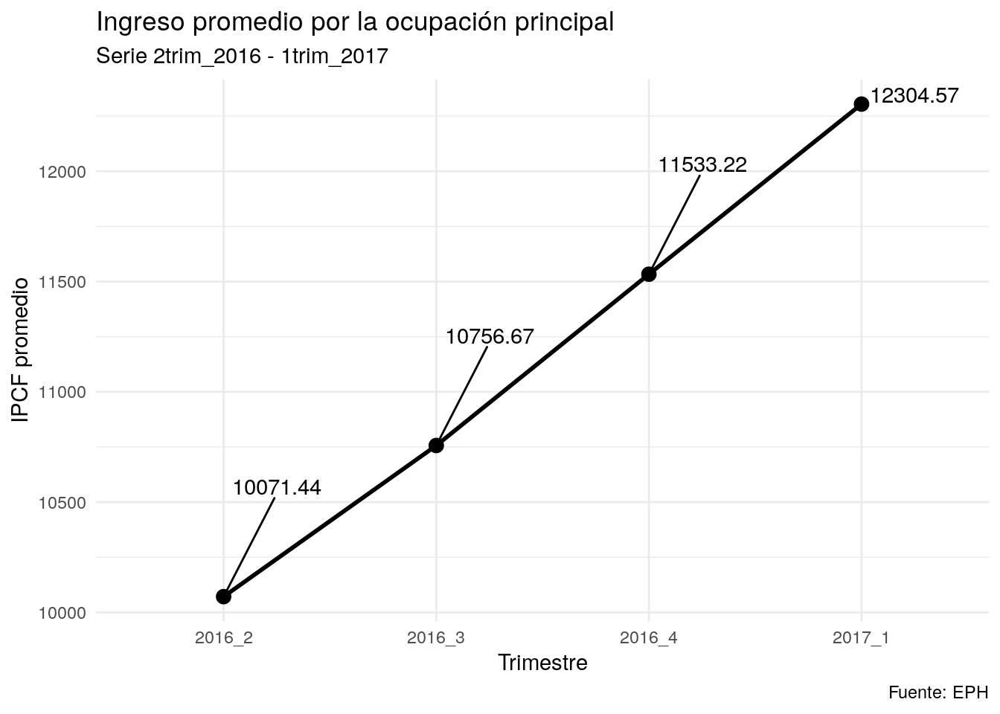
ggsave(filename = "Resultados/IPCF_prom.png") ##Guardo el Grafico## Saving 7 x 5 in image6.3.2 Distribución de los ingresos laborales y no laborales por sexo
- Ingresos no laborales : TVI
- Ingreso laborales:
- P21 MONTO DE INGRESO DE LA OCUPACIÓN PRINCIPAL
- Totp12 MONTO DE INGRESO DE OTRAS OCUPACIONES.
datagraf_2 <-Individual_t117 %>%
##eligo las variables que necesito
select(P47T,T_VI, TOT_P12, P21 , PONDII, CH04,NIVEL_ED) %>%
## Me quedo con los que tienen ingreso total individual (P47) positivo
filter(!is.na(P47T), P47T > 0 ) %>%
mutate(ingreso_laboral = TOT_P12 + P21,
ingreso_no_laboral = T_VI,
ingreso_total = ingreso_laboral + ingreso_no_laboral,
CH04 = case_when(CH04 == 1 ~ "Varon",
CH04 == 2 ~ "Mujer")) %>%
group_by(CH04) %>%
summarise('ingreso laboral' = sum(ingreso_laboral*PONDII)/sum(ingreso_total*PONDII),
'ingreso no laboral' = sum(ingreso_no_laboral*PONDII)/sum(ingreso_total*PONDII))
datagraf_2 ## # A tibble: 2 x 3
## CH04 `ingreso laboral` `ingreso no laboral`
## <chr> <dbl> <dbl>
## 1 Mujer 0.607 0.393
## 2 Varon 0.813 0.187Doy vuelta la tabla para poder graficar
datagrafico <- datagraf_2 %>%
gather(tipo_ingreso, monto,2:3 )
datagrafico## # A tibble: 4 x 3
## CH04 tipo_ingreso monto
## <chr> <chr> <dbl>
## 1 Mujer ingreso laboral 0.607
## 2 Varon ingreso laboral 0.813
## 3 Mujer ingreso no laboral 0.393
## 4 Varon ingreso no laboral 0.187ggplot(datagrafico, aes(CH04, monto, fill = tipo_ingreso,
label = sprintf("%1.1f%%", 100*monto)))+
geom_col(position = "stack", alpha=0.6) +
geom_text(position = position_stack(vjust = 0.5), size=5)+
labs(x="",y="Porcentaje")+
theme_tufte()+
scale_y_continuous()+
theme(legend.position = "bottom",
legend.title=element_blank(),
axis.text.x = element_text(angle=25))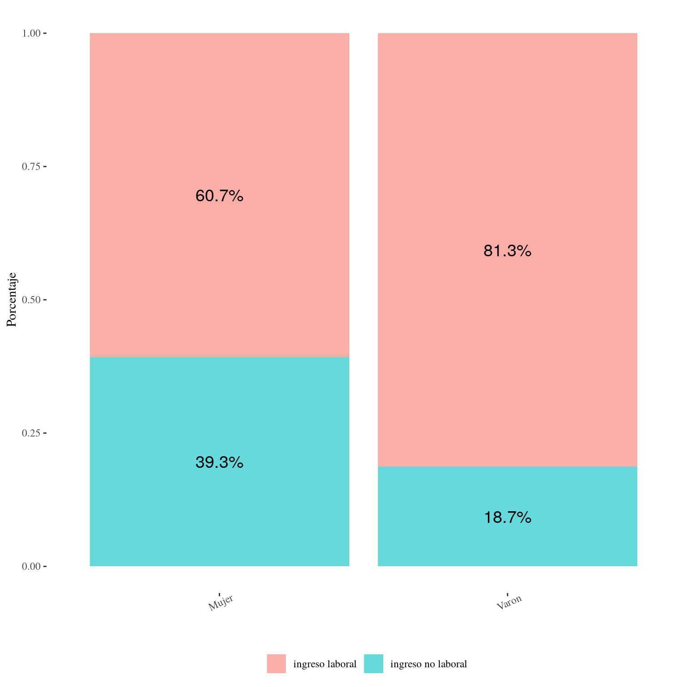
ggsave(filename = "Resultados/ingresos laborales y no laborales.png",scale = 2)## Saving 16 x 16 in imagePodemos agregar también grupos de edad como otra dimensión del análisis. Optamos por restringuir la población de análisis a la comprendida entre 18 y 60 años
####Agrego al procedimiento anterior una clasificación de las edades
datagraf_3 <-Individual_t117 %>%
select(P47T,T_VI, TOT_P12, P21 , PONDII, CH04,CH06) %>%
filter(!is.na(P47T), P47T > 0 , CH06 %in% c(18:60)) %>%
mutate(ingreso_laboral = as.numeric(TOT_P12 + P21),
ingreso_no_laboral = as.numeric(T_VI),
ingreso_total = ingreso_laboral + ingreso_no_laboral,
CH04 = case_when(CH04 == 1 ~ "Varon",
CH04 == 2 ~ "Mujer"),
EDAD = case_when(CH06 %in% c(18:30) ~ "18 a 30", ##<<
CH06 %in% c(31:45) ~"31 a 45", ##<<
CH06 %in% c(46:60) ~ "46 a 60")) %>% ##<<
group_by(CH04,EDAD) %>% ##<<
summarise('ingreso laboral' = sum(ingreso_laboral*PONDII)/sum(ingreso_total*PONDII),
'ingreso no laboral' = sum(ingreso_no_laboral*PONDII)/sum(ingreso_total*PONDII)) %>%
gather(tipo_ingreso, monto,3:4)
datagraf_3## # A tibble: 12 x 4
## # Groups: CH04 [2]
## CH04 EDAD tipo_ingreso monto
## <chr> <chr> <chr> <dbl>
## 1 Mujer 18 a 30 ingreso laboral 0.805
## 2 Mujer 31 a 45 ingreso laboral 0.844
## 3 Mujer 46 a 60 ingreso laboral 0.800
## 4 Varon 18 a 30 ingreso laboral 0.907
## 5 Varon 31 a 45 ingreso laboral 0.972
## 6 Varon 46 a 60 ingreso laboral 0.915
## 7 Mujer 18 a 30 ingreso no laboral 0.195
## 8 Mujer 31 a 45 ingreso no laboral 0.156
## 9 Mujer 46 a 60 ingreso no laboral 0.200
## 10 Varon 18 a 30 ingreso no laboral 0.0934
## 11 Varon 31 a 45 ingreso no laboral 0.0282
## 12 Varon 46 a 60 ingreso no laboral 0.0855ggplot(datagraf_3, aes(CH04, monto, fill = tipo_ingreso,
label = sprintf("%1.1f%%", 100*monto)))+
geom_col(position = "stack", alpha=0.6) +
geom_text(position = position_stack(vjust = 0.5), size=3)+
labs(x="",y="Porcentaje")+
theme_tufte()+
scale_y_continuous()+
theme(legend.position = "bottom",
legend.title=element_blank(),
axis.text.x = element_text(angle=25))+
facet_wrap(~EDAD)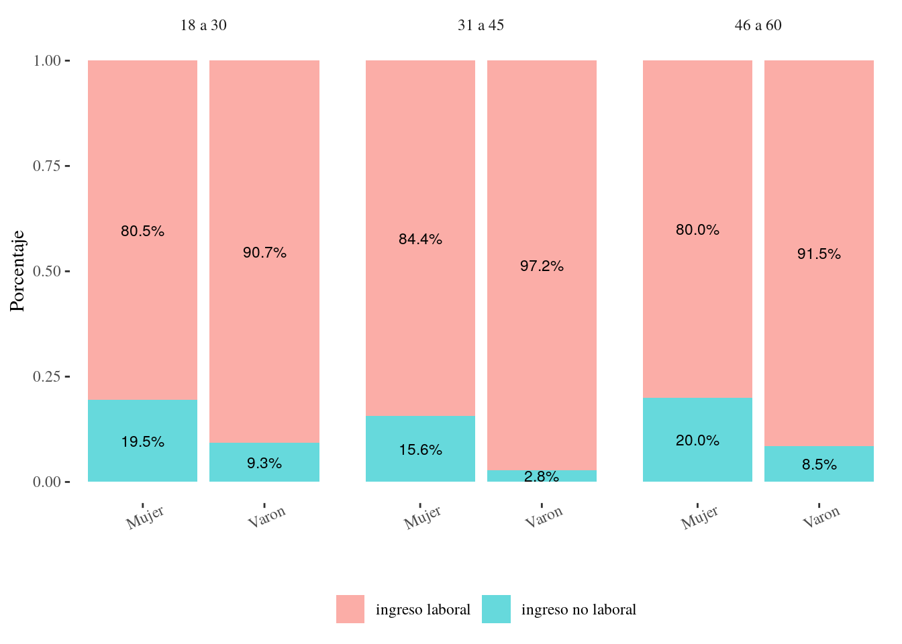
En los gráficos utilizamos extensiones de ggplot:
- ggrepel
geom_text_repel() - ggthemes
theme_tufte()
simplemente debemos recordar cargar las librerías si queremos utilizar esas funciones.
6.3.3 Otros gráficos
Los gráficos hasta aquí realizados (barras, línea) son fácilmente reproducibles en un excel ya que utilizan la información agregada. Sin embargo, la gran ventaja del R se manifiesta a a la hora de realizar:
- Gráficos que necesitan la información a nivel de microdatos. puntos, boxplots, Kernels, etc.
- Abrir un mismo gráfico según alguna variable discreta:
facet_wrap() - Parametrizar otras variables, para aumentar la dimensionalidad del gráficos.
- color
color = - relleno
fill = - forma
shape = - tamaño
size = - transparencia
alpha =
- color
Esto permite tener, en el plano, gráficos de muchas dimensiones de análisis
- Si el color representa una variable lo definimos dentro del aes(),
aes(... color = ingresos) - Cuando queremos simplemente mejorar el diseño (es fijo), se asigna por fuera, o dentro de cada tipo de gráficos,
geom_col(color = 'green').
6.3.3.1 Boxplots
- Los gráficos Boxplot representan una única variable (univariados).
- Están compuestos por una caja, cuyo límite inferior es el valor donde se alcanza el 25% de la distribución
- Su límite superior es el valor donde se alcanza el 75% de la misma.
- A su vez, también el gráfico marca los valores “outliers” (datos que se encuentran a una distancia de al menos 1,5 veces el tamaño de la caja del límite inferior o superior de la caja, según corresponda)
6.3.3.1.0.0.0.1 Boxplot de ingresos de la ocupación principal, según nivel educativo
Hacemos un procesamiento simple: Sacamos los ingresos iguales a cero y las no respuestas de nivel educativo.
Es importante que las variables sean del tipo que conceptualmente les corresponde (el nivel educativo es una variable categórica, no continua), para que el ggplot pueda graficarlo correctamente.
## Las variables sexo( CH04 ) y Nivel educativo están codificadas como números, y el R las entiende como numéricas.
class(Individual_t117$NIVEL_ED)## [1] "integer"class(Individual_t117$CH04)## [1] "integer"ggdata <- Individual_t117 %>%
filter(P21>0, !is.na(NIVEL_ED)) %>%
mutate(NIVEL_ED = as.factor(NIVEL_ED),
CH04 = as.factor(CH04))ggplot(ggdata, aes(x = NIVEL_ED, y = P21)) +
geom_boxplot()+
scale_y_continuous(limits = c(0, 40000))##Restrinjo el gráfico hasta ingresos de $40000## Warning: Removed 209 rows containing non-finite values (stat_boxplot).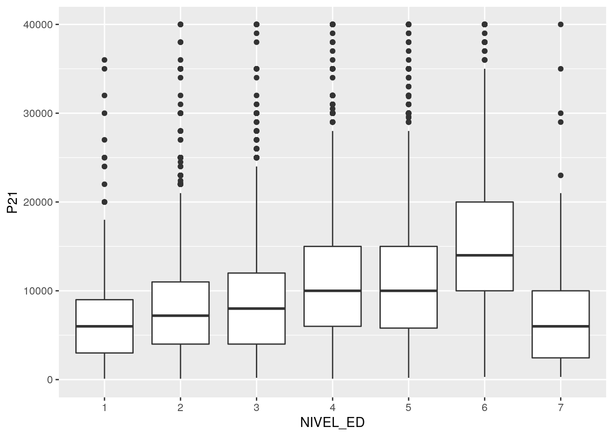
Si queremos agregar la dimensión sexo, podemos hacer un facet_wrap()
ggplot(ggdata, aes(x= NIVEL_ED, y = P21, group = NIVEL_ED, fill = NIVEL_ED )) +
geom_boxplot()+
scale_y_continuous(limits = c(0, 40000))+
facet_wrap(~ CH04, labeller = "label_both")## Warning: Removed 209 rows containing non-finite values (stat_boxplot).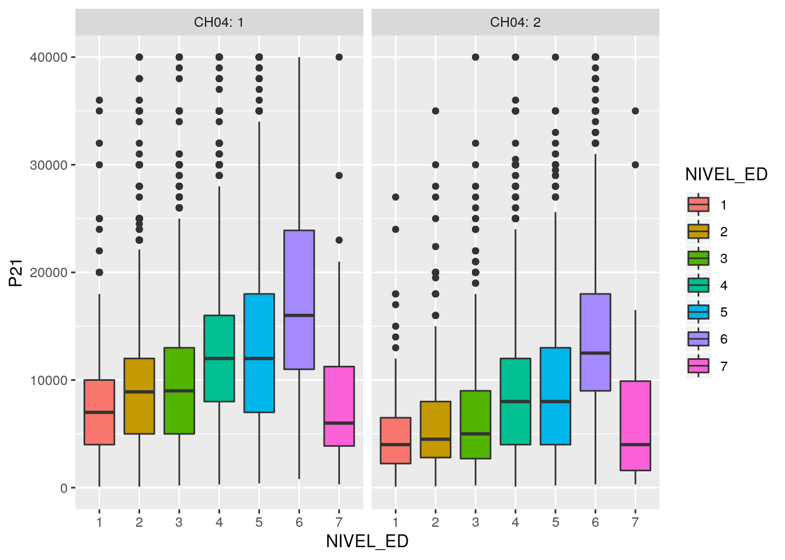
Por la forma en que está presentado el gráfico, el foco de atención sigue puesto en las diferencias de ingresos entre niveles educativo. Simplemente se agrega un corte por la variable de sexo.
Si lo que queremos hacer es poner el foco de atención en las diferencias por sexo, simplemente basta con invertir la variable x especificada con la variable utilizada en el facet_wrap
ggplot(ggdata, aes(x= CH04, y = P21, group = CH04, fill = CH04 )) +
geom_boxplot()+
scale_y_continuous(limits = c(0, 40000))+
facet_grid(~ NIVEL_ED, labeller = "label_both") +
theme(legend.position = "none")## Warning: Removed 209 rows containing non-finite values (stat_boxplot).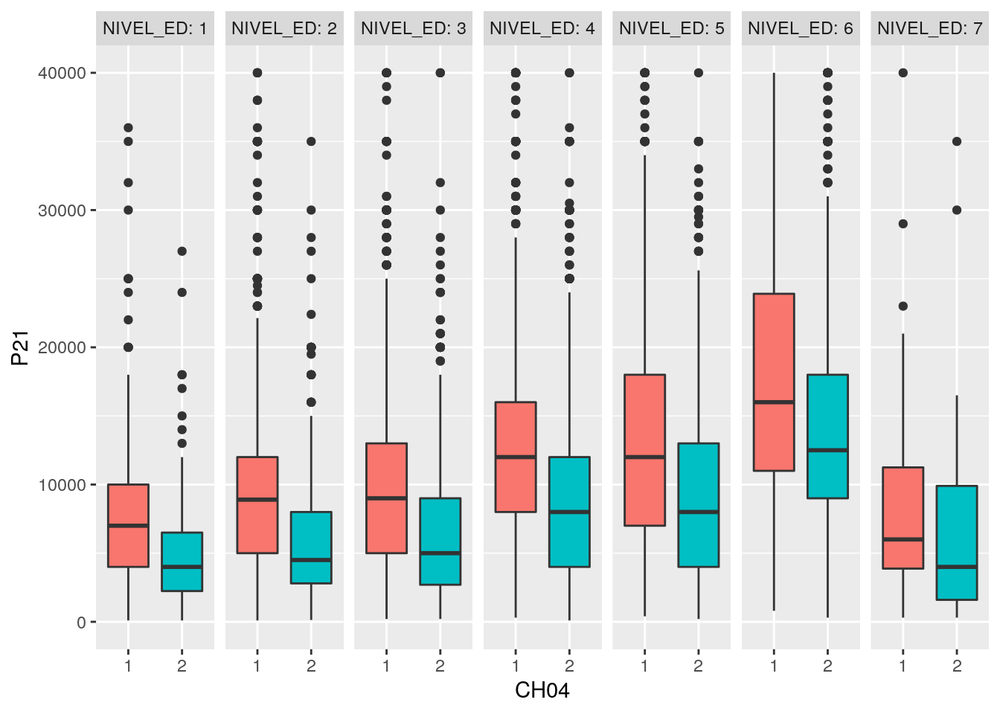
6.3.3.2 Histogramas
Otra forma de mostrar la distribución de una variable es utilizar un histograma. Este tipo de gráficos agrupa las observaciones en bins: intervalos dentro del rango de la variable. Luego cuenta la cantidad de observaciones que caen dentro de cada uno de estos bins.
Por ejemplo, si observamos el ingreso de la ocupación principal:
hist_data <-Individual_t117 %>%
filter(P21>0)
ggplot(hist_data, aes(x = P21,weights = PONDIIO))+
geom_histogram()+
scale_x_continuous(limits = c(0,50000))## `stat_bin()` using `bins = 30`. Pick better value with `binwidth`.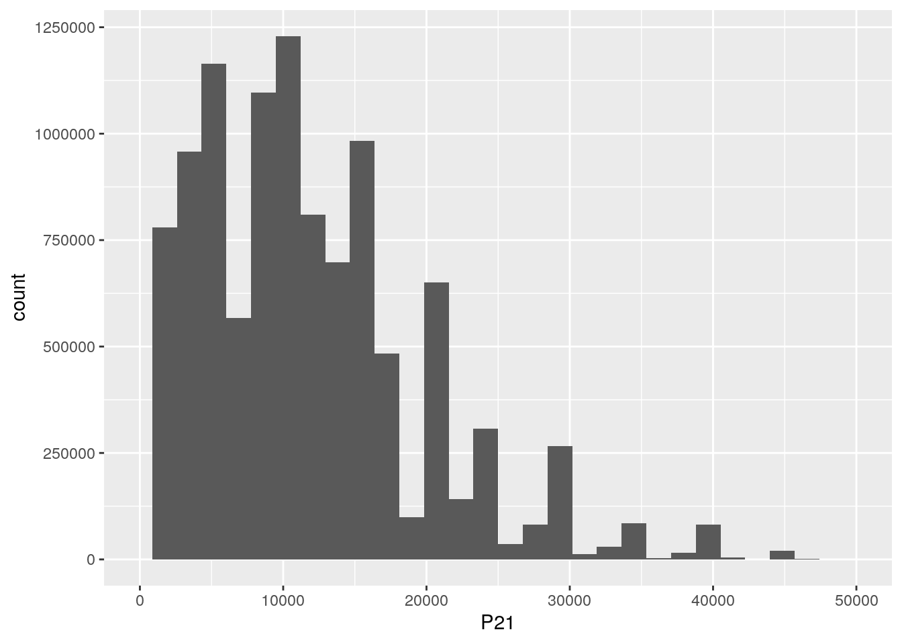
En este gráfico, los posibles valores de p21 se dividen en 30 bins consecutivos y el gráfico muestra cuantas observaciones caen en cada uno de ellos
6.3.3.3 Kernels
La función geom_density() nos permite construir kernels de la distribución. Esto es, un suavizado sobre los histogramas que se basa en alguna distribución supuesta dentro de cada bin. Es particularmente útil cuando tenemos una variable continua, dado que los histogramas rompen esa sensación de continuidad.
Veamos un ejemplo sencillo con los ingresos de la ocupación principal. Luego iremos complejizandolo
kernel_data <-Individual_t117 %>%
filter(P21>0)
ggplot(kernel_data, aes(x = P21,weights = PONDIIO))+
geom_density()+
scale_x_continuous(limits = c(0,50000))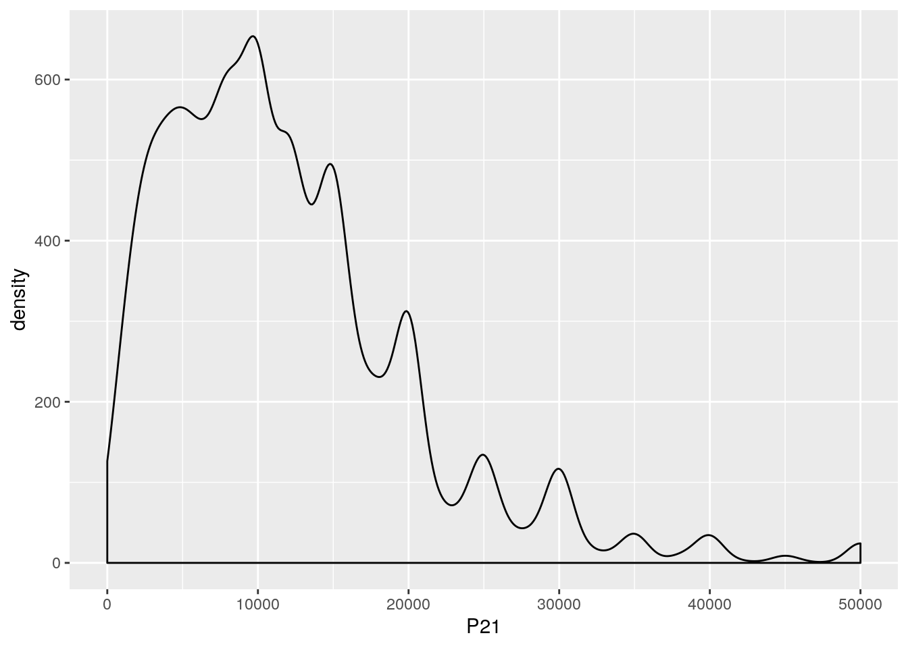 El eje y no tiene demasiada interpretabilidad en los Kernel, porque hace a la forma en que se construyen las distribuciones.
El parametro adjust, dentro de la función geom_densitynos permite reducir o ampliar el rango de suavizado de la distribución. Su valor por default es 1. Veamos que sucede si lo seteamos en 2
ggplot(kernel_data, aes(x = P21,weights = PONDIIO))+
geom_density(adjust = 2)+
scale_x_continuous(limits = c(0,50000))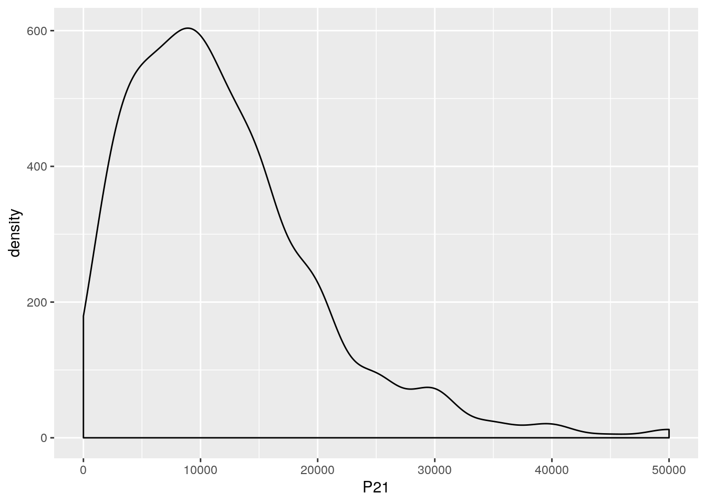
Como es esperable, la distribución del ingreso tiene “picos” en los valores redondos, ya que la gente suele declarar un valor aproximado al ingreso efectivo que percibe. Nadie declara ingresos de 30001. Al suavizar la serie con un kernel, eliminamos ese efecto.Si seteamos el rango para el suavizado en valores menores a 1, podemos observar estos picos.
ggplot(kernel_data, aes(x = P21,weights = PONDIIO))+
geom_density(adjust = 0.01)+
scale_x_continuous(limits = c(0,50000))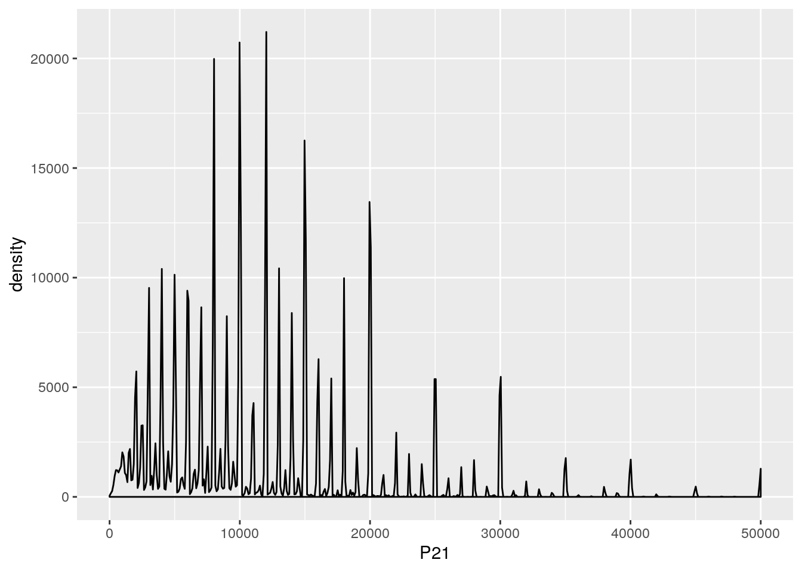
Ahora bien, como en todo grafico de R, podemos seguir agregando dimensiones para enriquecer el análisis.
kernel_data_2 <- kernel_data %>%
mutate(CH04= case_when(CH04 == 1 ~ "Varon",
CH04 == 2 ~ "Mujer"))
ggplot(kernel_data_2, aes(x = P21,
weights = PONDIIO,
group = CH04,
fill = CH04)) +
geom_density(alpha=0.7,adjust =2)+
labs(x="Distribución del ingreso", y="",
title=" Total según tipo de ingreso y sexo",
caption = "Fuente: Encuesta Permanente de Hogares")+
scale_x_continuous(limits = c(0,50000))+
theme_tufte()+
scale_fill_gdocs()+
theme(legend.position = "bottom",
plot.title = element_text(size=12))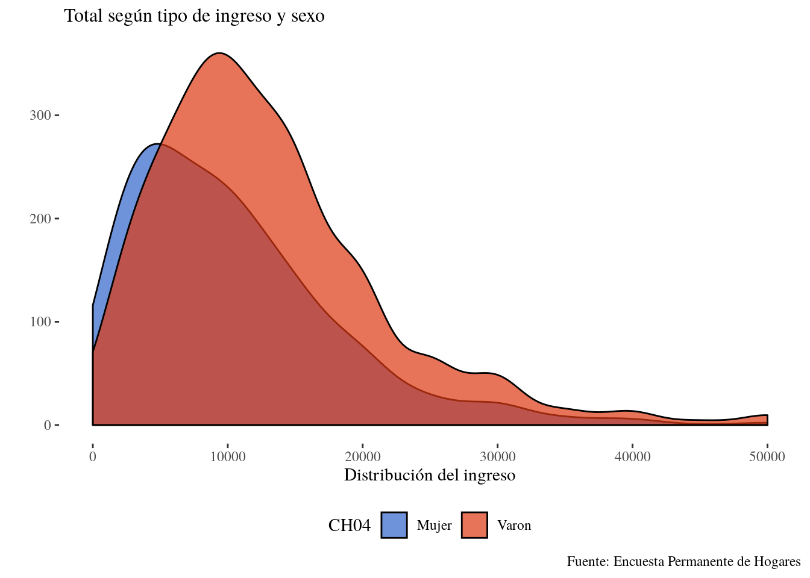
ggsave(filename = "Resultados/Kernel_1.png",scale = 2)## Saving 14 x 10 in imagePodemos agregar aún la dimensión de ingreso laboral respecto del no laboral
kernel_data_3 <-kernel_data_2 %>%
select(REGION,P47T,T_VI, TOT_P12, P21 , PONDII, CH04) %>%
filter(!is.na(P47T), P47T > 0 ) %>%
mutate(ingreso_laboral = TOT_P12 + P21,
ingreso_no_laboral = T_VI) %>%
gather(., key = Tipo_ingreso, Ingreso, c((ncol(.)-1):ncol(.))) %>%
filter( Ingreso !=0)## Para este gráfico, quiero eliminar los ingresos = 0
kernel_data_3[1:10,]## REGION P47T T_VI TOT_P12 P21 PONDII CH04 Tipo_ingreso Ingreso
## 1 43 1500 0 0 1500 1386 Varon ingreso_laboral 1500
## 2 43 9500 0 0 9500 1130 Mujer ingreso_laboral 9500
## 3 43 8000 0 0 8000 1629 Mujer ingreso_laboral 8000
## 4 43 6000 0 0 6000 1270 Varon ingreso_laboral 6000
## 5 43 21000 0 0 14000 2079 Mujer ingreso_laboral 14000
## 6 43 12000 0 0 9000 1280 Mujer ingreso_laboral 9000
## 7 43 20000 0 0 20000 1167 Varon ingreso_laboral 20000
## 8 43 15000 0 0 15000 1284 Mujer ingreso_laboral 15000
## 9 43 34000 0 10000 24000 1112 Mujer ingreso_laboral 34000
## 10 43 23000 0 0 23000 1162 Varon ingreso_laboral 23000 ggplot(kernel_data_3, aes(
x = Ingreso,
weights = PONDII,
group = Tipo_ingreso,
fill = Tipo_ingreso)) +
geom_density(alpha=0.7,adjust =2)+
labs(x="Distribución del ingreso", y="",
title=" Total según tipo de ingreso y sexo",
caption = "Fuente: Encuesta Permanente de Hogares")+
scale_x_continuous(limits = c(0,50000))+
theme_tufte()+
scale_fill_gdocs()+
theme(legend.position = "bottom",
plot.title = element_text(size=12))+
facet_wrap(~ CH04, scales = "free")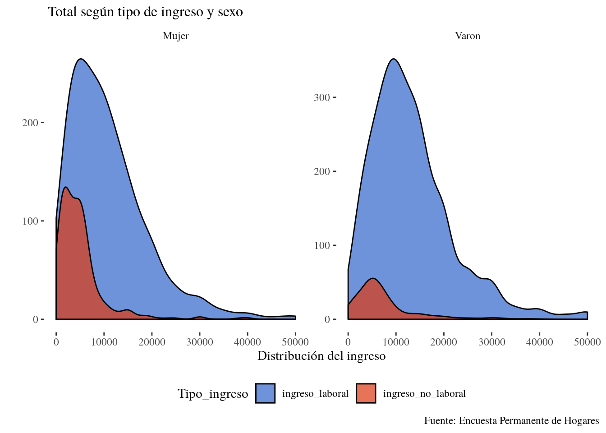
ggsave(filename = "Resultados/Kernel_2.png",scale = 2)## Saving 14 x 10 in imageEn este tipo de gráficos, importa mucho qué variable se utiliza para facetear y qué variable para agrupar, ya que la construcción de la distribución es diferente.
ggplot(kernel_data_3, aes(
x = Ingreso,
weights = PONDII,
group = CH04,
fill = CH04)) +
geom_density(alpha=0.7,adjust =2)+
labs(x="Distribución del ingreso", y="",
title=" Total según tipo de ingreso y sexo",
caption = "Fuente: Encuesta Permanente de Hogares")+
scale_x_continuous(limits = c(0,50000))+
theme_tufte()+
scale_fill_gdocs()+
theme(legend.position = "bottom",
plot.title = element_text(size=12))+
facet_wrap(~Tipo_ingreso, scales = "free")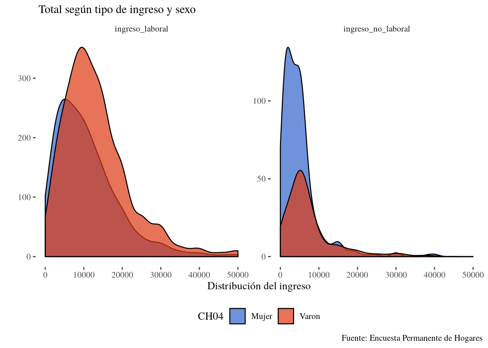
ggsave(filename = "Resultados/Kernel_3.png",scale = 2)## Saving 14 x 10 in image6.4 Ejercicios
6.4.1 Para practicar
Calcular el promedio del ingreso por ocupación principal (Variable P21) para asalariados con y sin descuento jubilatorio (Variable PP07H). Luego realizar un gráfico de barras donde se comparen ambos valores (para el 1er trimestre de 2017).
Pistas: Se deben filtrar previamente los ingresos mayores a 0 (P21>0).Chequear que ponderador corresponde utilizarGraficar la distribución del ingreso por ocupación principal para Asalariados, Cuentapropistas y Patrones, con el tipo de gráfico Kernel
Pista: Usar la función facet_wrap para separar a cada una de las categorías ocupacionales)
Sugerencia: incorporar la líneascale_x_continuous(limits = c(0,50000))entre las capas del gráfico. ¿Qué cambió?
6.4.2 De tarea
Hacer un gráfico boxplot de la distribución de edades de los asalariados con descuento jubilatorio, y de los asalariados sin descuento jubilatorio.
Uniendo las bases de los distintos trimestres, calcular el procentaje de asalariados sin descuento jubilatorio como \(\frac{Asal. s/ desc jubil}{Asal. c/ desc jubil+ Asal.s/ desc jubil}\). Luego realizar un gráfico de linea con la evolución de este indicador